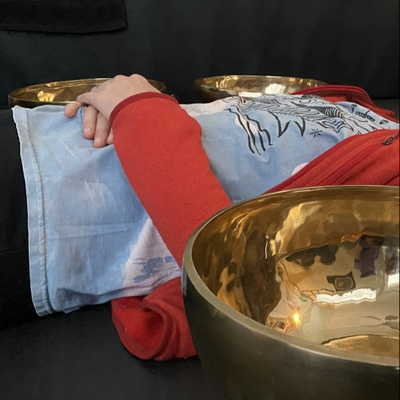
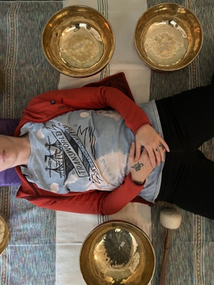
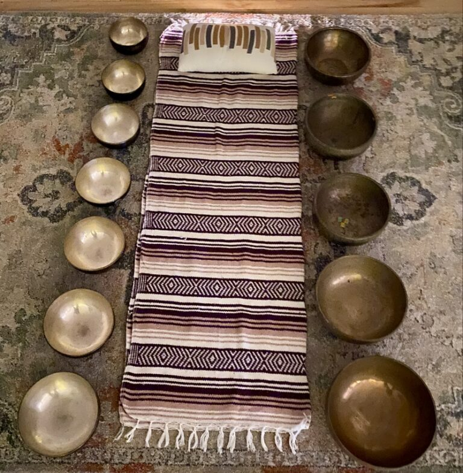
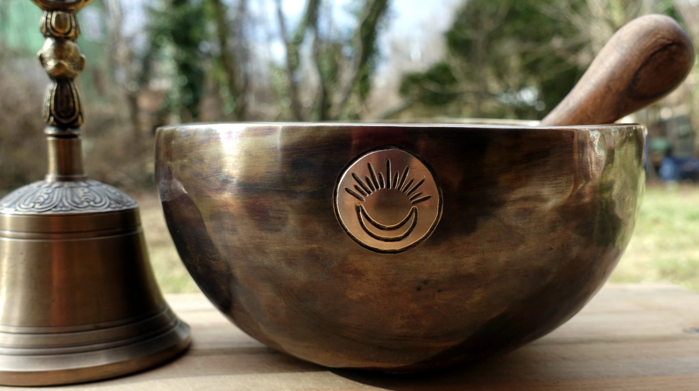
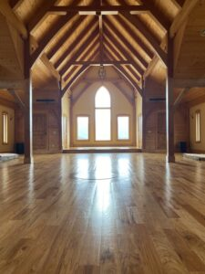

Every offering is an invitation into your own well‑being, tuned to the frequency and vibration your body is ready to receive.
Vibrational Sound Therapy is a deeply grounding, body-centered experience designed to restore your natural vibratory frequencies. Seven carefully placed Himalayan Singing Bowls surround the body, each offering soothing tones and therapeutic vibrations that move through muscles, fascia, and the energetic field.
The sound's vibrational resonance works on a cellular level, supporting the release of built-up tension, helping regulate an overworked nervous system, and clearing energetic blockages that accumulate from stress, emotional overwhelm, and daily demands.
Focused on both the physical and energetic layers, this modality offers a restorative reset for anyone navigating today's pressures, fatigue, or emotional heaviness.
How this differs from a group sound bath
A group sound healing is a journey through sound. Vibrational Sound Therapy is therapy through vibration. Where 40-plus bowls fill a room and the sound carries you, VST places seven on and around the body, so the vibration moves directly through tissue, fluid, and bone. Each bowl is chosen for what it does to heal: grounding tones to settle the nervous system, mid-range frequencies to release held tension, brighter notes to open clarity. Worked this close, seven bowls reach places a larger ensemble simply passes over.
Benefits Include
Sessions run about 90 minutes, with about an hour of sound and time on either side for an opening reading, integration, and a post-session vibrational state reading to observe shifts and support grounding.


Vibrational Sound Healing builds upon Vibrational Sound Therapy (VST) by integrating the seven bowl VST modality with the Merlin Trinity Healing System (MTHS). Similar to Reiki, MTHS is a life-force energy healing modality that uses the power of universal love and intelligent life force to raise one's vibrational frequency and support wholeness on the physical, emotional, and mental levels.
By combining these two modalities, the session works on multiple layers at once, clearing the energetic field, calming the nervous system, and creating a deeply restorative environment for healing and transformation.
Benefits Include
Sessions run about 90 minutes, with about an hour of sound and energy work and time on either side for an opening reading, integration, and a post-session vibrational state reading to observe shifts and support grounding.

Schedule a private sound healing journey, a session held just for you, tuned to where you are and what you need. Join Vivek at his studio in Asheville, or have him travel to you for an experience in the comfort of your own space.
Each private session is shaped around your intention. Over 40 handcrafted Himalayan singing bowls create a layered soundscape that reaches the physical, emotional, mental, and spiritual layers all at once. Without the energy of a group, the experience can settle deeper and feel more personal.
This somatic experience is centered around the body's chakra energy points. Bowls are played directly over the body, with focused attention given to where you most need support. As the resonating tones move through you, expect a gentle transformation, a felt sense of harmony, balance, and alignment settling in.
Ideal For
Sessions run about 90 minutes, with about an hour of sound and time on either side for an intention-setting check-in, integration, and space to reflect before stepping back into your day.
Let go. Let sound do the rest. Soothing Himalayan tones wash over you, quieting the mind, softening the body, settling the spirit. Over 40 handcrafted singing bowls, layered with binaural beats, open a soundscape your body can settle into. Harmonious, grounding frequencies reach your physical, emotional, mental, and spiritual layers all at once. More textured than a traditional sound bath. An intimate setting.

Schedule a private sound healing at the "Temple of the Awakening Heart," located only 30 minutes from Asheville on 40 acres of precious sacred Cherokee Medicine Land in the Blue Ridge Mountains.

"Sit & Sound." Third Wednesdays of every month where we bring guided meditation and sound as a reset to your week. Through Meetup. Open to all.
Sound with Intention & Purpose · 3-Day In-Person Course
Step into the transformative world of sound and vibration in this three-day, in-person training designed to give you the knowledge, confidence, and hands-on experience to begin your journey as a sound healing practitioner.
Bring the healing power of sound to your team, your event, or your retreat.
The premise is that sound can influence physical, emotional, mental and spiritual state of being. Our body is made up of 70% water. Because of this, sound vibrations and frequencies resonate with our body to produce relaxation and healing.